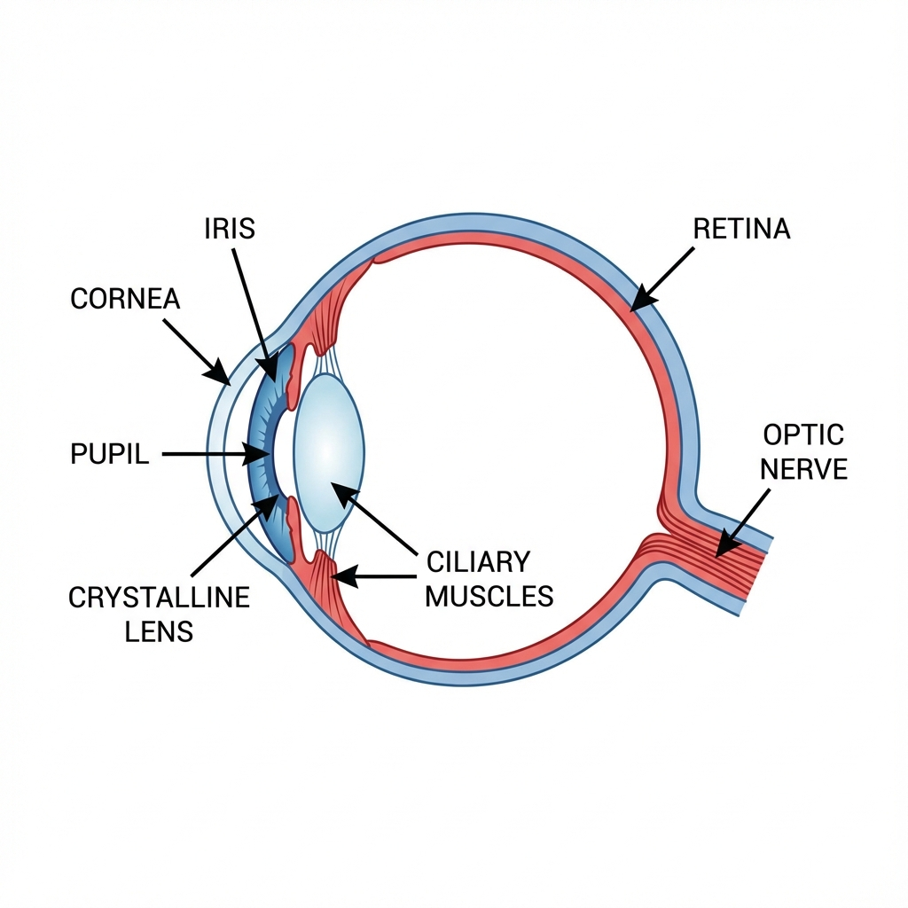
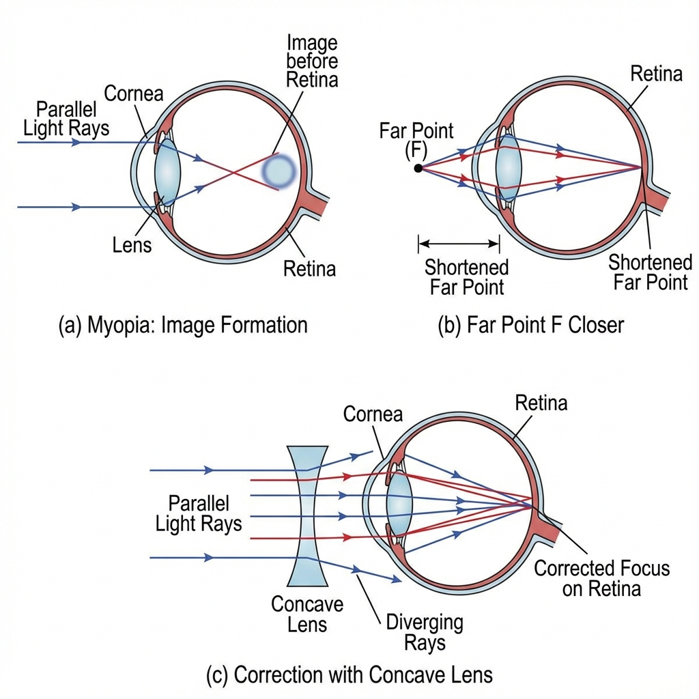
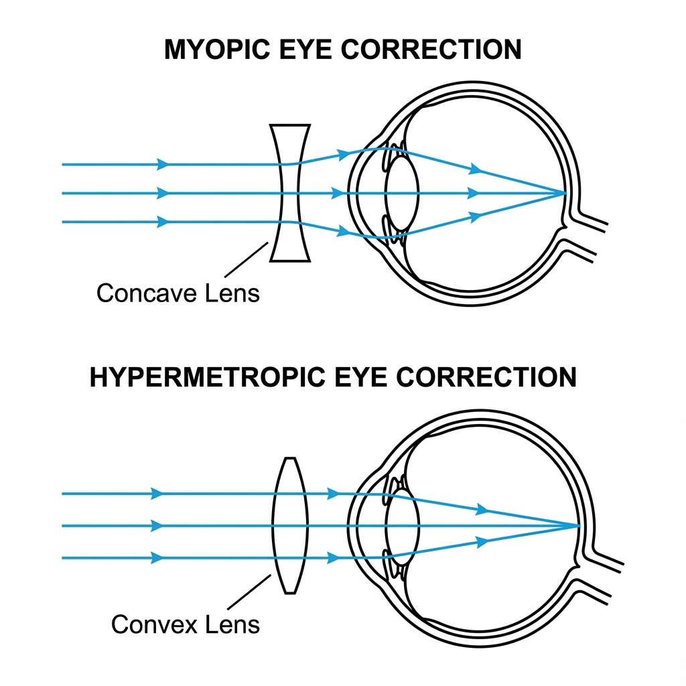
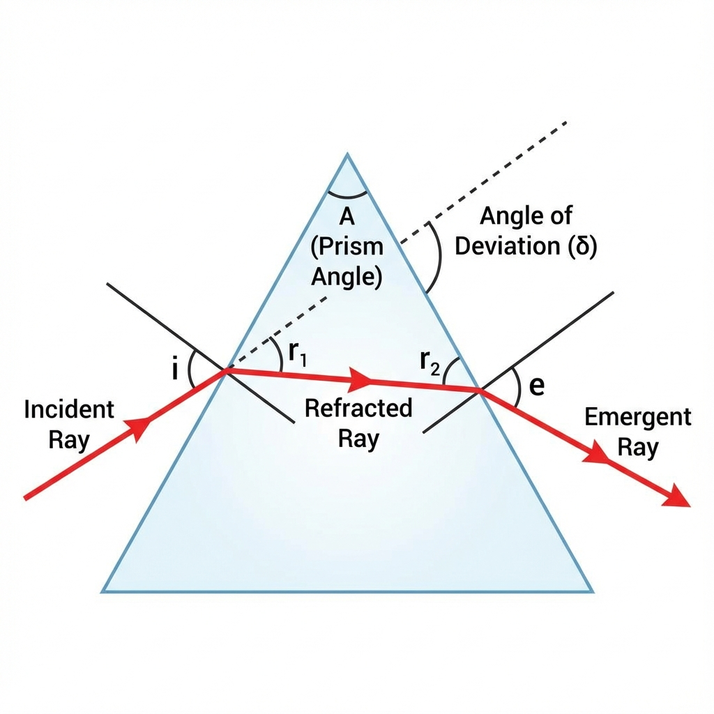
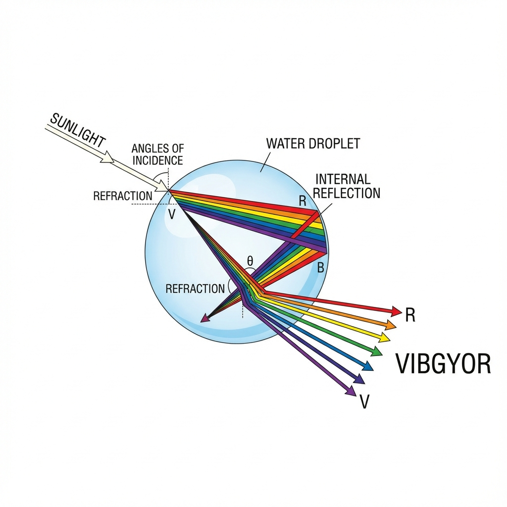

Physics
Chapter 10
The Human Eye &
The Colourful World
Exploring the structure of the eye, defects of vision, atmospheric refraction, and the beautiful
phenomena of dispersion and scattering.
10.1 Anatomy
The Human Eye
Structure
- Cornea: Transparent outer layer where most refraction occurs.
- Iris: Controls the size of the pupil.
- Pupil: Regulates the amount of light entering the eye.
- Eye lens (crystalline lens): Focuses light on the retina.
- Retina: Light-sensitive screen where image forms.
- Optic nerve: Transmits electrical signals to the brain.
- Ciliary muscles: Modifies curvature of the lens.
Working & Accommodation
Image formation on retina is Real and Inverted.
- Power of Accommodation: Ability of the eye lens to adjust its focal length.
- Near Point: Least distance of distinct vision (25 cm).
- Far Point: Infinity for a normal eye.
- Cataract: Clouding of the eye lens causing vision loss; treated via
surgery.

10.2 Vision
Defects of Vision & Correction
Myopia (Near-sightedness)
- A myopic person can see nearby objects clearly but cannot see distant objects clearly.
- Image is formed in front of retina.
- The far point (F) of a myopic eye is less than infinity.
Causes of Myopia
- Excessive curvature of eye lens.
- Elongation of eye ball.
Correction
Use of concave lens of appropriate power.

Hypermetropia (Far-sightedness)
Can see distant objects clearly but nearby objects are blurry.
- Near Point: Farther than 25 cm.
- Image Formation: Behind the retina.
- Causes: Long focal length of lens or Short eyeball.
- Correction: Convex Lens.
Presbyopia
Age-related vision defect resulting in difficulty to read nearby objects.
- Cause: Weakening of ciliary muscles & Reduced flexibility of lens.
- Correction: Bi-focal lenses (Both Concave & Convex).

10.3 & 10.4 Light
Refraction & Dispersion by Prism
Refraction Through Prism
- Angle of Prism: Angle between two lateral faces.
- Incident Ray: Ray entering the prism.
- Refracted Ray: Ray traveling inside the prism.
- Emergent Ray: Ray leaving the prism.
- Angle of Deviation: Angle between incident ray component and emergent ray.

Dispersion & Rainbow
Dispersion: Splitting of white light into its component colours (VIBGYOR).
- Spectrum: The band of coloured components of a light beam.
- Rainbow: Natural spectrum in sky due to dispersion of sunlight by
raindrops.
Process: Refraction & Dispersion → Internal Reflection → Refraction.

10.5 Atmosphere
Atmospheric Refraction
Refraction of light caused by different layers of the atmosphere having varying densities.
Twinkling of Stars
- Starlight undergoes continuous refraction.
- Atmosphere is dynamic (density changes).
- Apparent position and brightness of star fluctuates.
- Planets don't twinkle: They are closer, act as extended sources; average
variation is zero.
Advance Sunrise & Delayed Sunset
- Sun is visible 2 mins before actual sunrise and 2 mins after actual sunset.
- Due to atmospheric refraction, sun appears slightly higher than the horizon.
- Also causes flattening of Sun's disc at horizon.
10.6 Scattering
Scattering of Light
Tyndall Effect
Scattering of light by colloidal particles makes the path of a beam visible.
- Seen in smoke-filled rooms.
- Sunlight through canopy of a dense forest.
Sky Blue Colour
Fine particles in air scatter smaller wavelengths (Blue) more than larger wavelengths (Red).
Scattering ∝ 1/λ⁴
At high altitudes (no atmosphere), sky appears dark.
Reddish Sun
At Sunrise/Sunset, light travels longer distance through atmosphere.
- Blue light gets scattered away.
- Only Red (longer wavelength) reaches our eyes.